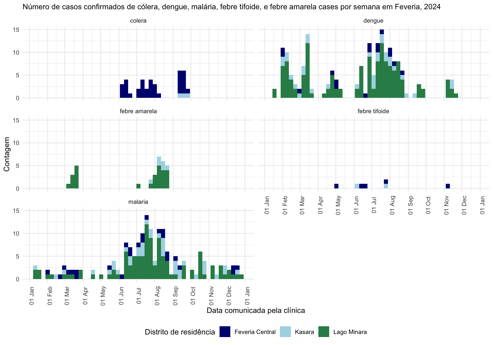

# Garante que o pacote "pacman" está instalado
if (!require("pacman")) {
install.packages("pacman")
}
# Instala (se necessário) a partir do CRAN e carrega os pacotes a serem usados
pacman::p_load(
rio, # importar dados
skimr, # obter visão geral dos dados
janitor, # limpeza de dados e criação de tabelas
lubridate, # trabalhar com datas
epikit, # criar categorias de idade
gtsummary, # estatísticas resumidas, testes e regressões
apyramid, # plotar pirâmides etárias
flextable, # tabelas prontas para apresentação
naniar, # avaliar dados ausentes
remotes, # usado para instalar pacotes para baixar dados
tidyverse # gestão de dados e visualização
)Ligação e análise de dados de notificação e de dados laboratoriais em R
Para obter instruções sobre como utilizar os nossos estudos de caso, consulte o nosso guia. Agradecemos comentários e sugestões via contact@appliedepi.org. Também pode discutir o estudo de caso ou conceitos relacionados na Comunidade Applied Epi.
Cenário
Você é um epidemiologista que trabalha no serviço nacional de vigilância de Feveria, um país tropical muito pequeno. Existem três distritos em Feveria:
- Feveria Central:uma área urbana superpovoada, com infraestrutura de água e saneamento às vezes precária.
- Lago Minara: uma zona lacustre com boa infra-estrutura mas muitos mosquitos nos meses mais quentes do ano.
- Kasara: uma zona mais suburbana do outro lado de Feveria Central.
Mapa dos distritos do país Feveria
É janeiro de 2025, e sua supervisora gostaria que você transferisse o processamento rotineiro dos dados de doenças de notificação compulsória do Excel para o R e realizasse algumas análises com os dados. Ela quer saber pelo menos:
- Quantos casos suspeitos das diferentes doenças de notificação compulsória foram notificados em 2024 e qual foi a mais comum?
- Qual porcentagem deles acabou sendo confirmada?
- Quantos casos confirmados das diferentes doenças de notificação compulsória foram notificados em 2024 e qual foi a mais comum?
- Como é que os casos confirmados foram distribuídos geográfica e temporalmente em Feveria?
Ela pede que você escreva código para importar, limpar, relacionar e analisar as seguintes listas de casos (linelists):
- Dados de vigilância de doenças notificáveis de 2024: Também designados por “dados de notificação”, estes são dados de vigilância de cinco doenças notificáveis comunicadas pelas clínicas do Feveria: dengue, malária, cólera, febre tifoide e febre amarela. Trata-se de casos suspeitos, baseados nos sintomas dos pacientes. Os médicos introduzem cada notificação num sistema em linha todos os dias da semana.
- 2024 dados de resultados de testes laboratoriais: Estes dados provêm de resultados de análises laboratoriais de três grandes laboratórios de Feveria. Estes resultados referem-se a amostras colhidas dos casos suspeitos de doenças notificáveis mencionados acima.
Vamos lá!
Objetivos
Neste estudo de caso, você vai:
- Usar funções-chave do R para limpar os dados, reorganizar os conjuntos de dados, relacionar fontes de dados e criar novas colunas usando condições lógicas, a fim de preparar os dados para análise.
- Realizar inspecções de dados e verificações da qualidade dos dados em várias fases do projeto e compreender a sua importância para uma análise confiável.
- Realizar análises descritivas básicas para comparar as tendências das doenças entre diferentes fontes de dados, antes e depois do linkage.
- Interpretar as diferenças nos resultados entre as fontes de dados e compreender como elas refletem a estrutura e o desenho do sistema de vigilância como um todo.
Passo 1. Configuração
1.1 Começar a utilizar o RStudio
Comece por estabelecer um fluxo de trabalho reproduzível e bem organizado. Este facilitará a repetição da sua análise sempre que necessário.
Tarefas:
- Configurar um projeto RStudio
- Configurar subpastas claras onde o seu código, dados e resultados serão colocados
- Crie um script R, ou um arquivo R Markdown, se preferir. Certifique-se de que que o objetivo do script, a data e o autor estão escritos como comentários no topo.
- Extra: Certifique-se de que a sua linguagem de trabalho no RStudio é apropriada (por exemplo, inglês para este exercício)
Clique para ler uma dica
Crie uma pasta para onde irá todo o trabalho deste estudo de caso. Por exemplo, crie a pasta ‘multidoencas_lab’ no ambiente de trabalho do seu computador. Crie o seu projeto RStudio para ser baseado nesta pasta.
Sugerimos que crie as seguintes subpastas:
scripts(para os códigos),data(para os seus dados), eoutputs(para os resultados da análise).
1.2 Instalar/carregar pacotes
A seguir, no seu script R, você precisa instalar e carregar os pacotes R necessários. Isto garante que as funções necessárias estarão disponíveis para sua análise.
São necessários os seguintes pacotes: {rio} (para importação de dados),{skimr} (para explroar os dados), {janitor} (para limpeza de dados), {lubridate} (para limpeza de datas), {epikit} (para tarefas relacionadas com epidemiologia), {gtsummary} (para estatísticas resumidas/testes e regressão), {apyramid} (para pirâmides etárias), {flextable} (para tabelas prontas para apresentação), {naniar} (para avaliar dados faltantes), e {tidyverse} (para tarefas gerais de manipulação de dados). Também vai precisar do {remotes} para baixar os dados - o que explicaremos na seção de download.
Ao começar, seu colega de confiança te cutuca e sussurra: “Ouvi dizer que uma ótima forma de gerenciar seus pacotes é com o pacote {pacman}”.
Agora é com você!
Passo 2. Baixar e importar os dados
2.1: Baixar os dados
O seu escritório fornece-lhe dois arquivos para a sua análise, ambos com dados relativos a 2024 e atualizados a partir de 15 de janeiro de 2025:
- Um conjunto de dados no nível de notificação de doenças (“notificacoes_multidoencas.xlsx”) com informações de casos de 5 centros de saúde.
- Um conjunto de dados a nível de exames laboratoriais (“testes_multidoencas.csv”) apresentado por três laboratórios que efetuam exames para os 5 centros de saúde.
Para este estudo de caso, você pode baixar os dados através do repositório de dados muito útil do Applied Epi, que pode ser acessado usando o pacote {appliedepidata}.
Siga estes passos:
- Instale o pacote
{appliedepidata}do GitHub usando a funçãoinstall_github()do pacote{remotes}(que você instalou anteriormente).
# Use a função install_github do pacote remotes para instalar o appliedepidata
remotes::install_github("appliedepi/appliedepidata")- Salve os dois conjuntos de dados numa pasta específica utilizando a função
save_data()do pacote{appliedepidata}. Execute o código abaixo. O exemplo abaixo salva os dados em uma subpastadatadentro do projeto do RStudio. Observe que, se você não especificar um local no argumentopathda função, uma janela será exibida pedindo para selecionar manualmente uma pasta.
# Salva os dois arquivos de dados usando a função save_data() do pacote appliedepidata
appliedepidata::save_data("testes_multidoencas",
path = "data")
appliedepidata::save_data("notificacoes_multidoencas",
path = "data")2.2 Importar os dados
Ótimo! Obrigado ao escritório do país e à Applied Epi! Agora é hora de importar os dados dessa pasta para o RStudio, para que você possa analisá-los.
Tarefa A: Importar os dois arquivos de dados baixados para o seu ambiente R Studio (Environment)
Idealmente, utilizará a mesma função para importar ambos os conjuntos de dados, apesar de uma ser um arquivo .csv e o outro um arquivo .xlsx. Nota: daqui para a frente, diremos simplesmente “ambiente” quando nos referirmos ao painel ambiente (Environment) no R Studio.
Clique para ler uma dica
Use a função import do pacote {rio} que consegue reconhecer e importar diferentes tipos de arquivos. Ela substitui funções de importação específicas para cada tipo de arquivo, como read.csv() do {base} para arquivos .csv e read_excel() do {readxl} para importar arquivos .xlsx.
Se achar que precisa de saber mais sobre funções de importação, leia o capítulo Importar e exportar do Manual de R para Epidemiologistas
Passo 3. Inspecionar os dados
Os dados foram importados e agora é hora de ver que história eles contam. Faça uma análise inicial dos dois data frames brutos para verificar seu conteúdo e qualidade.
Passo 3.1 Inspecionar os dados de notificação
Tarefa A: Primeiro, inspecionar o dimensões e o conteúdo geral dos dados da nota
Use as funções skim() do pacote {skimr}, names(), ncol() e nrow() para inspecionar seu conjunto de dados.
A função skim() fornece muitas informações sobre a estrutura e o conteúdo dos dados, enquanto names() mostra os diferentes nomes das colunas. As funções ncol() e nrow() contam, respectivamente, o número de colunas e linhas do conjunto de dados. Você sabe o que colocar dentro dos parênteses?
O jeito mais fácil, no entanto, é olhar diretamente o ambiente do RStudio.
Lembre-se: o objeto no seu ambiente referente às notificações se chama dados_notif_bruto.
Clique na caixa de solução abaixo das perguntas se precisar de ajuda.
Tarefa B: Em seguida, observe as classes de colunas no seu data frame de notificação bruta
Use a função skim() do pacote {skimr} ou class() para inspecionar as classes das colunas.
Você se lembra de como especificar a coluna de interesse dentro da função class()?
Como alternativa, você pode simplesmente olhar para o ambiente.
Tarefa C: Inspecionar valores categóricos e dados ausentes
Use a função tabyl() para inspecionar os valores dentro de colunas categóricas, especificando o objeto do data frame no primeiro argumento e o nome da coluna no segundo argumento.
Por exemplo, este código tabula os valores da coluna Sexo. A saída mostra que “masculino” e “feminino” estão escritos de forma inconsistente nos dados. Essa coluna precisará de limpeza adicional antes da análise.
tabyl(dados_notif_bruto, Sexo) Sexo n percent valid_percent
F 47 0.04761905 0.05452436
FEMININO 146 0.14792300 0.16937355
M 40 0.04052685 0.04640371
MASCULINO 172 0.17426545 0.19953596
f 154 0.15602837 0.17865429
feminino 98 0.09929078 0.11368910
m 119 0.12056738 0.13805104
masculino 86 0.08713273 0.09976798
<NA> 125 0.12664640 NAPara inspecionar dados ausentes, você pode usar a função miss_var_summary() do pacote {naniar}:
miss_var_summary(dados_notif_bruto)# A tibble: 12 × 3
variable n_miss pct_miss
<chr> <int> <num>
1 Data de inicio dos sintomas 691 70.0
2 Gestante 510 51.7
3 Resultado 197 20.0
4 Data do resultado 197 20.0
5 Data de nascimento 168 17.0
6 Sexo 125 12.7
7 Nome da unidade organizacional 0 0
8 Codigo da unidade de saude 0 0
9 ID notificacao 0 0
10 Distrito de residencia 0 0
11 Doenca notificada 0 0
12 Data comunicada pela unidade de saude/comunidade 0 0 Passo 3.2 Inspecionar os dados laboratoriais
Tarefa A: Inspecionar as dimensões e o conteúdo geral dos dados laboratoriais
Da mesma forma como acontece com os dados de notificação, utilize as funções skim(), ncol(), e nrow() ou verifique o objeto no ambiente para inspecionar os dados laboratoriais.
Tarefa B: Verificar as classes, os valores categóricos e os valores ausentes
Como acima, utilize as funções class(), skim(), ou tabyl(), ou inspecione o objeto direto no ambiente RStudio, para analisar as suas colunas com mais detalhes.
Passo 4. Limpar e descrever os dados de notificação
Agora já sabemos que os dados de notificação (dados_notif_bruto) contêm informações sobre casos suspeitos, além de variáveis demográficas básicas (idade, sexo, gravidez, distrito de residência), bem como dados sobre a data de início dos sintomas, a dados de notificação pela unidade de saúde e o desfecho. Algumas dessas colunas precisam ser limpas antes da análise, seja por variações na ortografia de valores categóricos, seja porque algumas datas não foram corretamente reconhecidas como tal.
A partir deste ponto, você começará a escrever trechos mais longos de código para realizar a limpeza, utilizando várias funções do {dplyr} encadeadas com pipes (que se parecem com isso: |>).
NOTA SOBRE PIPES Os pipes permitem realizar várias operações em sequência, “encadeando” diferentes funções. O resultado de uma função passa a ser a entrada como primeiro argumento da seguinte.
Caso queira mais detalhes sobre o uso de pipes, veja a seção do Manual de R para Epidemiologistas.
Neste exercício será utilizado o pipe nativo do R (|>), que é mais rápido e não exige instalação de pacotes adicionais. Se preferir, você também pode usar o pipe do pacote magrittr (%>%).
Passo 4.1 Limpar os dados
Tarefa A: Limpar os nomes das colunas e selecionar colunas para análise
Devido a questões de qualidade e armazenamento de dados, a sua equipe recomenda que seja criado um data frame limpo, contendo apenas as seguintes variáveis: identificador único, localização do caso, doença e a data em que a notificação foi registrada no sistema de vigilância.
Escreva um código em R para produzir um novo data frame limpo chamado dados_notif, aplicando as seguintes tarefas de limpeza:
- Renomear as colunas para serem mais legíveis pela máquina (remover espaços e capitalização) usando a função
clean_names()do pacote{janitor}.
- Usar a função
rename()do pacote{dplyr}para que a coluna com a data em que o caso foi notificado seja alterada para o nome mais concisodata_notificacao. - Selecionar colunas relevantes para análise com a função
select()do pacote{dplyr}.
Clique para ler uma dica
Comece seu código com o nome do novo data frame, a seta do operador de atribuição e o nome do objeto de dados brutos. Isso indica que o resultado do processamento dos dados brutos será atribuído a um novo objeto chamado dados_notif. .
dados_notif <- dados_notif_brutoEm seguida, desenvolva este código adicionando funções adicionais, encadeadas com um pipe. Isto permite executar várias operações em uma sequência contínua. Primeiro, utilize clean_names() para padronizar todos os nomes das suas colunas. Essa função substitui automaticamente espaços e caracteres especiais por sublinhados e converte tudo para minúsculas, tornando os nomes mais fáceis de trabalhar. Depois, você pode usar rename() para atribuir um novo nome a uma coluna. Lembre-se de que, ao utilizar rename(), a coluna já possui a versão de seu nome gerada pelo clean_names().
dados_notif <- dados_notif_bruto |>
clean_names() |>
rename(NOVO_NOME = ANTIGO_NOME) |>
select(VAR_NOMES)Tarefa B: Padronizar valores categóricos
A partir da inspeção dos dados, já se sabe que os valores para distritonão estão padronizados.
Adicione um mutate() para limpar a coluna distrito_de_residencia da seguinte maneira:
- Normalizar a capitalização dos valores dessa coluna
- Substituir a coluna existente
distrito_de_residenciaexistente por uma coluna limpa que contenha apenas estes valores de distrito: “Lago Minara”, “Feveria Central” e “Kasara”.
Veja a dica para saber quais funções utilizar.
Clique para ler uma dica
Tente usar str_to_title() do pacote {stringr} para que a primeira letra de cada palavra seja maiúscula e todas as outras letras sejam minúsculas. Também pode utilizar case_match() para corrigir erros tipográficos específicos.
Use a funcionalidade de ajuda do RStudio para aprender a utilizar essas funções. Por exemplo, digite ?case_match no console para abrir a página de ajuda e a documentação da função. Nota: case_match() é uma função muito útil para substituir ou corrigir valores, e pode substituir recode().
Tarefa C: Lidar com datas
A coluna data_notificacao precisa ser transformada para que seja reconhecida como uma data no R. Isso permitirá analisar tendências ao longo do tempo, incluindo semanas e meses.
Reveja os valores da coluna data_notificacao. Em seguida, adicione uma linha ao seu código de limpeza para converter data_notificacao em uma classe de data.
Conhecer a estrutura dos dados permitirá utilizar a função correta para a conversão.
Recomendamos o uso de funções do pacote {lubridate}, como ymd() (para datas no formato ano-mês-dia), mdy() (para datas no formato mês-dia-ano) ou dmy() (para datas no formato dia-mês-ano). Essas funções reconhecerão qualquer forma de escrever a data, desde que a ordem esteja correta; por exemplo, “21 de agosto de 2025” e “21-08-2024” seriam reconhecidas por dmy().
Tarefa D: Verificar a existência de duplicados
Os seus colegas dizem-lhe que cada id_notificacao representa um caso suspeito. Agora você pretende criar uma tabela para verificar se id_notificacao está duplicado nas linhas dos seus dados.
Clique para ler uma dica
Há várias formas de fazer isso, mas tente utilizar a função count() do pacote {dplyr}. Ela cria uma tabela que conta o número de linhas para cada valor único da coluna que você especificar. Em seguida, utilize tabyl() para visualizar a distribuição dessas contagens.
Etapa 4.2 Análise descritiva simples
Você pode agora proceder confortavelmente às análises descritivas dos casos, pois os dados estão limpos e cada linha equivale a um caso. Use a função tabyl() para realizar as tarefas seguintes.
Tarefa A: Contar o número de casos suspeitos de cada doença diagnosticados em Feveria em 2024
Tarefa B: Contagem do número de casos suspeitos por doença e distrito de residência
Utilize tabyl() para fazer uma tabulação cruzada das colunas da doença notificada e do distrito de residência.
Desenvolva a tabulação adicionando várias funções adorn() do pacote {janitor} para visualizar as distribuições percentuais, como por exemplo adorn_percentages(), adorn_pct_formatting() e adorn_ns().
Digite o nome da função precedido de ? no console (por exemplo, ?adorn_ns) para acessar as páginas de ajuda relevantes. Você também pode consultar a seção sobre {janitor} no Manual de R para Epidemiologistas para mais explicações sobre as funções adorn_xxx().
Clique para ler uma dica
Aqui está um código para ajudá-lo a começar. Ele cria tabelas cruzadas entre doenca_notificada e distrito_de_residencia usando tabyl() e, em seguida, aplica adorn_percentages() para converter os números em percentagens com muitas casas decimais. Depois, é necessário passar para adorn_pct_formatting() para formatar as percentagens corretamente, e então usar adorn_ns() para adicionar os números originais entre parênteses.
Note que as funções adorn_xxx() devem ser aplicadas em uma ordem específica!
tabyl(dados_notif, doenca_notificada, distrito_de_residencia) |>
adorn_percentages()Para entender os fatores que contribuem para o aumento de casos de diarreia, volte ao início do estudo de caso, quando os distritos foram apresentados pela primeira vez.
Passo 5. Limpar, consolidar e descrever os dados laboratoriais
Com base no seu trabalho anterior, na Etapa 3, você verificou que os dados laboratoriais contêm apenas informações sobre os testes e nenhuma informação sobre o paciente. Os dados já estão bastante limpos, então só precisamos padronizar uma coluna. Também queremos processar o data frame do laboratório para que haja uma linha por notificação, permitindo que ele seja corretamente vinculado ao data frame de notificações.
Passo 5.1 Normalizar os resultados dos testes
Tarefa A: Converter qualquer valor com “P” para “Positivo”, “N” para “Negativo” e “I” para “Indeterminado”.
Criar um novo objeto dados_lab. Isto permitirá uma abordagem e análise mais direta bem como facilitará a interpretação dos resultados.
Passo 5.2 Consolidar uma linha por teste
Tarefa A: Revisar o número de amostras com várias linhas
Já sabemos que algumas amostras possuem várias linhas, porque o teste de dengue possui três alvos, gerando uma linha por resultado de alvo.
Agora, identifique o número de amostras com várias linhas.
Faça isso da mesma forma que fez com os dados de notificação: use dados_lab para primeiro contar o número de linhas por amostra e, em seguida, crie uma tabela para mostrar a distribuição desses números de linhas. Lembre-se de que cada amostra é identificada por um id_amostra.
Tarefa B: Consolidar uma linha por sample_id, dando prioridade aos resultados positivos
Como você viu na Seção 3.2, o teste de dengue fornece resultados para três alvos diferentes: IgG, IgM e NS1. Os resultados para cada um desses alvos podem ser negativos ou positivos. No entanto, para simplificar e consolidar os dados, deseja-se atribuir um único valor, negativo ou positivo, para cada amostra, indicando se a amostra representa uma infecção ativa.
alvo | Negativo | Positivo |
|---|---|---|
Dengue IgG | 110 | 105 |
Dengue IgM | 105 | 110 |
Dengue NS.1 | 139 | 76 |
O seu colega Ben, que trabalha no laboratório, aconselha sobre a limpeza da seguinte forma:
- Uma amostra pode ser considerada positiva se NS1 ou IgM forem positivos (já que ambos podem indicar uma infecção aguda).
- O IgG pode ser ignorado (porque um resultado positivo, na ausência de NS1 ou IgM positivos, indica imunidade de uma infecção passada resolvida).
Agora, você precisa consolidar os resultados dos testes de dengue em uma linha por teste, com um valor de resultado. Utilize filter(), arrange() e slice(), garantindo que qualquer amostra positiva para NS1 ou IgM seja considerada positiva para dengue.
Crie um novo objeto chamado dados_lab_testes.
Clique para ler uma dica
Tente aplicar o seguinte para consolidar os resultados de acordo com a recomendação do Ben:
- Remover resultados de IgG: filtre as linhas em que o alvo é
"IgG"usandofilter()do{dplyr}.
- Priorizar resultados positivos de IgM/NS1: agrupe por
id_amostrae organize as linhas comarrange()para que qualquer resultado"P"(positivo) apareça primeiro.
- Filtrar para o status final: mantenha apenas a primeira linha usando
slice(1)para obter o resultado positivo ou negativo da amostra.
Tarefa C: Desduplicar para uma linha por id_notificacao, dando prioridade aos resultados positivos
Em seguida, verifique o número de testes por ID de notificação nos novos dados consolidados.
Pode-se observar que existem 26 linhas com o mesmo id_notificacao que outra linha, mas apenas entre os casos testados com microscopia de sangue total para malária.
dados_lab_testes |>
count(exame, id_notificacao) |>
tabyl(exame, n) exame 1 2
Cultura de fezes 45 0
Dengue NS1/IgG/IgM 215 0
Hemocultura 33 0
IgM ELISA 88 0
Microscopia de sangue total 451 26Investiga-se mais detalhadamente analisando um caso de exemplo com id_notificacao “043228”.
Isso mostra que este caso foi testado duas vezes, com duas amostras diferentes, com uma semana de intervalo. O primeiro resultado foi positivo e o segundo resultado foi negativo.
dados_lab_testes |>
filter(id_notificacao == "043228")# A tibble: 2 × 7
nome_laboratorio id_notificacao id_amostra data_exame exame alvo resultado
<chr> <chr> <chr> <IDate> <chr> <chr> <chr>
1 Hospital Universit… 043228 27c37cd8 2024-06-18 Micr… Plas… Positivo
2 Hospital Universit… 043228 d2271be0 2024-06-25 Micr… Plas… Negativo Se respondeu que precisa deduplicar, está correto!
Deduplicar os dados para ter uma linha por ID de notificação priorizando os resultados positivos, para que seja possível fazer a vinculação com os dados da notificação.
Para fazer isso, siga um processo semelhante ao da tarefa B, utilizando a estrutura de dados produzida pela tarefa B:
- Agrupar por
id_notificacao - Ordenar pelo valor do resultado do exame, de modo a que os valores que começam por P tenham prioridade na linha superior, seguidos por N (negativo) e depois I (indeterminado).
- Em seguida, mantenha a primeira linha dentro de cada grupo de
id_notificacaos, utilizandoslice(). - Ao fazer isto, crie um novo objeto chamado
dados_lab_casos.
Passo 5.3 Análise descritiva simples
Agora temos dois objetos que podemos utilizar para a análise de dados laboratoriais: dados_lab_testes e dados_lab_casos.
Tarefa A: Contar o número de exames específicos de doenças, resultados positivos e resultados negativos nos dados laboratoriais de 2024
Tarefa B: Contar o número de casos suspeitos examinados nos dados de 2024
Etapa 6. Vinculação e processamento final
Agora que ambas as listas de casos estão limpas e têm uma linha por caso suspeito, você pode vinculá-las para permitir a análise completa solicitada pelo seu chefe.
Passo 6.1 Vincular os dados de notificação e os dados laboratoriais
Tarefa A: Realizar a vinculaçõa
Criar um novo objeto chamado dados_vinculados, utilizando uma função xxx_join() do {dplyr}. Pretende-se manter todas as notificações, mas adicionar resultados de exames, quando disponíveis, para cada caso suspeito.
Tarefa B: Verificar se a vinculação funcionou como esperado
Agora, verifique os seus dados e revise algumas coisas.
Passo 6.2 Rotular os casos confirmados, descartados e suspeitos
Tarefa A: Criar uma coluna final de “categoria de caso”
Utilize mutate() para criar uma nova coluna categoria_caso atualizando o rótulo dos casos suspeitos de acordo com o seu resultado laboratorial. As categorias devem ser as seguintes:
- Se o resultado for positivo: Confirmado
- Se o resultado for negativo: Descartado
- Se o resultado for indeterminado ou inexistente: Suspeito
Isto significa que todos os casos nos dados de notificação são inicialmente suspeitos quando notificados, e permanecem suspeitos se não houver um resultado conclusivo no exame.
Passo 6.3 Analisar a distribuição dos resultados laboratoriais entre os casos
Tarefa A: Utilizar tabyl() para tabular a categoria de caso
Utilizar tabyl() em geral, e também a tabulação cruzada por doença para responder às perguntas abaixo.
Tarefa B: Avaliar a porcentagem de casos suspeitos que são efetivamente casos verdadeiros
Utilize tabyl() mais uma vez para esta tarefa, analisando os resultados por doença. Pense no denominador correto!
Clique para ler uma dica
Dividir o número de casos confirmados (ou seja, aqueles com um resultado positivo) pelo número de casos confirmados e descartados (ou seja, aqueles com um resultado positivo ou negativo). Obtém-se assim uma taxa de positivos, que se aproxima da porcentagem de casos suspeitos que eram efetivamente casos. Os resultados indeterminados são excluídos porque não fornecem um resultado claro e distorceriam a taxa de positivos.
Passo 6.4 Criar uma lista com apenas casos confirmados
Tarefa A: Criar uma nova lista de casos chamada dados_vinculados_confirmados.
Esta é a que você utilizará nos relatórios oficiais de vigilância.
Passo 7. Análise descritiva dos casos confirmados
Agora que você tem sua lista de casos confirmados de doenças de notificação compulsória registrados em Feveria em 2024, você está pronto para conduzir a parte final da sua análise de vigilância! Especificamente, isso significa resumir as cinco doenças de notificação compulsória por área geográfica e tempo.
Dica: Normalmente, a análise de vigilância incluiria também uma análise por pessoa. Você pode expandir este estudo de caso, analisando também por variáveis demográficas.
Passo 7.1 Descrever os casos por distrito
Tarefa A: Produzir uma tabela de casos confirmados por distrito utilizando as funções tabyl() e adorn_xxx(), incluindo os totais
Passo 7.2 Descrever os casos ao longo do tempo
Você irá trabalhar na construção desta curva epidêmica, ao longo das várias tarefas abaixo.

Tarefa A: Comece utilizandoggplot() e geom_histogram() para construir uma curva epidêmica geral para Feveria, mostrando a contagem de casos por semana de notificação, com barras empilhadas e coloridas por doença
Certifique-se de especificar o argumento binwidth=7 para que cada barra no histograma represente o número de casos dentro de um período de 7 dias.
Tarefa B: Utilize ggplot() para produzir uma curva epidêmica mostrando a contagem de casos por semana de relatório, facetada (e não empilhada) por doença
Utilize facet_wrap() para criar facilmente vários mini-plots, um por doença. Para entender isto melhor, você pode consultar a seção seção de facetas do capítulo sobre ggplot2 no Manual de R para Epidemiologistas
Tarefa C: Agora adicione uma cor de preenchimento ao seu gráfico facetado para que as barras sejam empilhadas por distrito
Tarefa D: Adicione mais formatações ao seu gráfico facetado para deixá-lo pronto para publicação
Você pode especificar:
- O tema/aparência geral do gráfico (por exemplo, cor de fundo, aparência das linhas de grade)
- O título e os rótulos
- As cores das barras (com
scale_fill_manual()) - A formatação e o espaçamento das datas ao longo do eixo x (com
scale_x_date) - Muitas outras coisas!
Tarefa E: Produzir uma tabela resumindo as datas
Desta vez, utilize group_by() e summarize() para produzir uma tabela por distrito com as datas mais antigas e mais recentes dos relatórios.
Você pode modificar a sua tabela com um filter() para criar esta tabela para um distrito de cada vez.
Conclusão
Uau! De acordo com os objetivos deste estudo de caso, você conseguiu fazer o seguinte:
Utilizar funções-chave do R para limpar, remodelar e vincular data frames, além de criar novas colunas utilizando condições lógicas.
Para orientar o processamento dos dados, você realizou inspeções e verificações de dados ao longo do caminho
Você conduziu uma análise descritiva detalhada para compreender os dados dos exames e notificações, antes e depois da vinculação. Em resposta às quatro perguntas iniciais do seu supervisor, você pode dizer:
- Quantos casos suspeitos das diferentes doenças de notificação compulsória foram notificados em 2024, e qual foi o mais comum? A malária foi a doença de notificação compulsória mais comum em Feveria em 2024, notificada através do sistema de vigilância de doenças de notificação compulsória: Foram notificados 533 casos suspeitos de malária, 273 casos suspeitos de dengue, 100 de febre amarela, 46 de cólera e 35 de febre tifoide.
- Qual a porcentagem de casos acabaram sendo confirmados? Quase 80% dos casos notificáveis notificados em 2024 tinham um resultado de exame laboratorial no momento em que o conjunto de dados vinculados foi criado, com alguma variação por doença. No total, 56% dos casos notificados acabaram por ser confirmados, mas esta percentagem variou entre 23% para a febre tifoide (7 casos confirmados de 31 casos suspeitos com resultados de exames) e 95% para a cólera (38 casos confirmados de 40 casos suspeitos com resultados de exames). Além disso, a taxa de positivos foi mais elevada para a suspeita de dengue do que para a suspeita de malária (87% contra 41%).
- Quantos casos confirmados das diferentes doenças de notificação compulsória foram notificados em 2024 e qual foi o mais comum? Os casos confirmados seguiram uma tendência ligeiramente diferente da dos casos suspeitos: a infecção mais notificada foi a dengue, com 186 casos, seguida da malária (174), da cólera (38), da febre amarela (33) e da febre tifoide (7).
- Como é que os casos confirmados se distribuem geográfica e temporalmente em Feveria? Feveria registrou transmissão de dengue e malária ao longo do ano, com picos no verão, e concentrados no distrito de Lago Minara. Feveria também registrou surtos pequenos e pouco frequentes de doenças diarreicas, por exemplo, cólera e febre tifoide, particularmente na área urbana de Feveria Central, onde pode haver problemas com água e saneamento.
Por último, você refletiu sobre a forma como os processos envolvidos nos sistemas de vigilância de doenças de notificação compulsória e nos exames laboratoriais, por exemplo, a transferência de dados entre clínicas e laboratórios, podem afetar a qualidade e a integridade dos dados e, como consequência, os seus resultados.
Há muito mais potencial pela frente. Você pode explorar padrões de doença por idade ou sexo, calcular taxas de doença com dados populacionais e até analisar atrasos na notificação, examinando as diferentes datas nos seus conjuntos de dados.
Você construiu uma base sólida e está bem equipado para levar a sua análise para o nível seguinte. Continue firme - descobertas emocionantes o aguardam!
Para saber mais, consulte os outros estudos de caso ou mergulhe no Manual de R para Epidemiologistas.
Código para limpeza e análise dos dados
Veja abaixo um script de todas as etapas de limpeza de dados e análises descritivas. Repare como as análises são combinadas no final ao invés de intercaladas entre os passos de limpeza. Esta é uma forma mais organizada de estruturar o seu script.
Para simplificar, o código abaixo não inclui todas as inspeções e verificações realizadas ao longo do processo, mas você pode optar por criar uma seção específica para esses verificações.
O início do seu script também deve trazer informações que ajudem o leitor a entender para que ele serve, além de comentários ao longo do código. Você mesmo vai agradecer por ter incluído esses comentários no futuro!
Informações sobre o estudo de caso
| Data | Alterações efetuadas | Versão | Autor |
|---|---|---|---|
| Julho de 2025 | Primeiro rascunho | 1 | Paula Blomquist e Alanah Jansen, Applied Epi, com o apoio técnico do CDC Global Surveillance, Laboratory, and Data Systems Branch em colaboração com a TEPHINET |
| Agosto de 2025 | Tradução para o português | 1 | Lucca Nielsen e Pedro Menezes |
Termos de uso
Aviso legal: A informação apresentada neste exercício e os arquivos de dados associados foram desenvolvidos para ajudar os alunos a atingir os objetivos de aprendizagem pretendidos. Os conteúdos são da responsabilidade do(s) autor(es) e não representam necessariamente as opiniões oficiais do CDC, do Departamento de Saúde e Serviços Humanos dos EUA ou da TEPHINET.
Licença: Este estudo de caso está sob uma licença CC BY-NC-SA 4.0. Para mais informações sobre o compartilhamento e adaptação deste estudo de caso, consulte a escritura associada.
Financiamento Este estudo de caso foi 100% apoiado pelo Acordo de Cooperação número NU2HGH000044 financiado pelos Centros de Controle e Prevenção de Doenças (CDC) dos EUA.